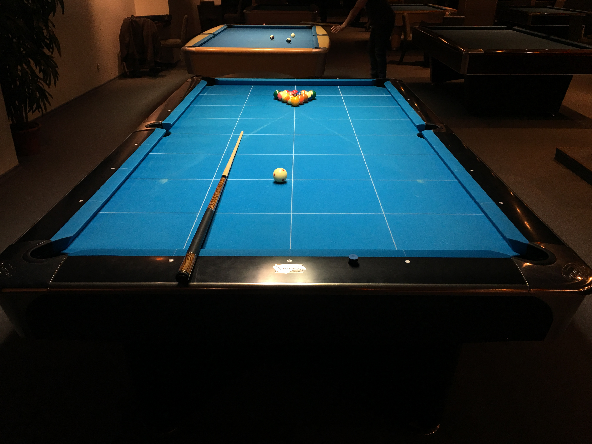

Piljard on sportmäng, milles kiidega lüües veeretatakse kuule piiretega laua külgedel ja nurkadel seisvatesse aukudesse. Piljardit mängitakse mitmel viisil, eri reeglite ja varustusega. Populaarsemad alad on ameerika pool, snuuker, püramiid ja karambool. Enamlevinud mänguformaadid ameerika poolis on kaheksa pall, üheksa pall ja kümme pall. Piljardile lähedaste alade hulka kuulub näiteks koroona.
Varustuse hulka kuulub laud, kiid ja kuulid. Laua standardmõõtmeteks on 9x4,5 jalga (standardmõõtmete imperiaalsed ühikud on jäänud piljardispordi Ameerika päritolust). Kiisid on mitmeid eri tüüpi, kuid lihtsaks mänguks piisab vaid ühte tüüpi mängukiist. Ameerika pooli kuulikomplekti kuuluvad 16 kuuli, millest üks on valge löögikuul, ülejäänud kuulid on nummerdatud ja erineva värviskeemiga. Nende kuulidega saab mängida kõiki enamlevinud mänguformaate, jättes osad kuulid vajadusel mängust välja.
Foto: Karl-Jonathan Lellep
Maailmas on palju edukaid mängijaid, kuid ka Eestil on oma edukas nimi piljardimaailmas ette näidata, kelleks on Denis Grabe. Teine näide edukast kiisportlasest on Ronnie O'Sullivan.